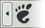
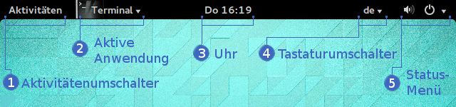
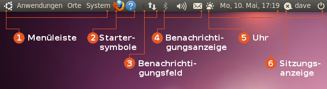
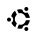
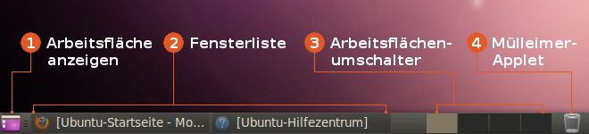
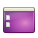
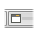
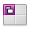
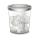

GNOME Panel
 Ein Panel ist ein Standard-Element jeder Desktop-Umgebung und natürlich auch bei GNOME vorhanden. Neben einem Anwendungsmenü (Startmenü) ist im Regelfall eine Taskleiste enthalten, die Auskunft über die vom Benutzer gestarteten Programme liefert und einen bequemen Wechsel zwischen diesen möglich macht. Ein drittes Element ist ein Status-Bereich (Systray), der fast immer rechts außen angesiedelt ist.
Allerdings haben sich Optik, Funktionalität und Verhalten im Laufe der Weiterentwicklung von GNOME entscheidend verändert. Um diesen Aspekt zu berücksichtigen, werden hier beispielhaft die Panel von GNOME 3 und 2 gezeigt, um eine Vergleichsmöglichkeit zu bieten. Die Desktop-Oberfläche Unity verwendet ein GNOME 3 sehr ähnliches Panel, während bei MATE die Konzepte von GNOME 2 weitergeführt werden.
GNOME 3¶
Die GNOME Shell verwendet in der Standardeinstellung nur ein Panel am oberen Bildschirmrand. Die jeweiligen Funktionen können mit Hilfe von Erweiterungen erweitert werden. Die Abbildung zeigt nur die Grundeinstellung, da das Aussehen durch Erweiterungen sehr stark an die eigenen Bedürfnisse angepasst werden kann. 
| Elemente des Panels bei GNOME 3 | ||
| Nr. | Element | Beschreibung |
| 1 | Aktivitätenumschalter | Durch einen Linksklick  wechselt man vom Normalmodus in den Übersichtsmodus. wechselt man vom Normalmodus in den Übersichtsmodus. |
| 2 | Aktive Anwendung | Zeigt die aktive Anwendung an. Mit einem Linksklick öffnet sich ein Menü mit weiteren Einstellungen für das aktive Programm. |
| 3 | Uhr | Ein Linksklick öffnet einen Kalender und eine Terminübersicht. |
| 4 | Tastaturumschalter | Der Linksklick öffnet ein Menü zum wechseln des verwendeten Tastaturlayouts. |
| 5 | Status-Menü | Das "Status-Menü" kombiniert die Lautstärkeregelung, die Bluetooth- und Netzwerkeinstellungen, den Akkuladestand, die Einstellungen und Systemfunktionen in einem einheitlichen Menü. |
GNOME 2¶
MATE verwendet in der Grundeinstellung (wie GNOME 2) zwei Panel, jeweils am oben und unteren Bildschirmrand. Die jeweiligen Funktionen wurden über "Applets" realisiert. Die Abbildungen zeigen nur die Grundeinstellung (von Ubuntu 10.04), da das Aussehen durch Hinzufügen und Entfernen von Applets durch den Benutzer an die eigenen Bedürfnisse angepasst werden kann.
Um dem Panel ein neues Applet hinzuzufügen, klickt man das Panel irgendwo in der Mitte mit der rechten Maustaste  an und wählt das gewünschte aus einer Liste der installierten Applets aus. Anschließend kann das Applet ebenfalls mit der rechten Maustaste entsprechend positioniert werden.
an und wählt das gewünschte aus einer Liste der installierten Applets aus. Anschließend kann das Applet ebenfalls mit der rechten Maustaste entsprechend positioniert werden.
Der obere Bildschirmrand¶
Aus optischen Gründen (kompaktere Darstellung) wurde der normalerweise in der Mitte des Panels (zwischen Startersymbolen und Benachrichtigungsfeld) vorhandene freie Platz entfernt.

| Elemente des oberen Panels bei GNOME 2 | |||
| Nr. | Symbol | Applet | Optionen und Tipps |
| 1 |  | Menüleiste Eine benutzerdefinierte Menüleiste, enthält die Menüs "Anwendungen", "Orte" und "System". | Durch "Rechtsklick -> Menüs bearbeiten" öffnet sich ein Fenster, in dem das Hauptmenü angepasst werden kann. |
| 2 | Startersymbole Um häufig verwendete Anwendungen und Dokumente auf einen Mausklick hin verfügbar zu machen. | Symbole können durch "Rechtsklick -> verschieben" in andere Panele verschoben werden. | |
| 3 | Benachrichtigungsfeld Ein Feld, in dem Benachrichtigungssymbole angezeigt werden. | "systray" - zeigt Symbole mit dem Status verschiedener Anwendungen an, um auf die Aktivitäten dieser Anwendungen hinzuweisen (beispielsweise den Netzwerk-Manager). | |
| 4 | Benachrichtigungsanzeige Eine weitere, aber ubuntu-spezifische Anzeige dafür, dass etwas Aufmerksamkeit benötigt. | "indicator applets" - zeigen Symbole aus verschiedenen Anwendungen an. Zum Beispiel "Lautstärke/Audio-Einstellungen", Batterieanzeige, Bluetooth-Kontrolle, Chat, Mail und Rhythmbox. | |
| 5 | Uhr System-Datum und -Zeit anzeigen | Bei einem Klick wird ein Kalender mit dem aktuellem Monat angezeigt. In den "Einstellungen" kann die Anzeige um Wetterdaten erweitert werden. | |
| 6 | Sitzungsanzeige Ein Ort, um den eigenen Status anzupassen, den Benutzer wechseln oder die aktuelle Sitzung zu verlassen (ebenfalls ubuntu-spezifisch). | Im linken Teil stehen Funktionen für Internetanwendungen wie z.B. Instant-Messenging-Dienste bereit. Über das Ein/Aus Symbol rechts kann der Computer unter anderem abgeschaltet oder in den Ruhezustand versetzt werden. | |
Der untere Bildschirmrand¶

| Elemente des unteren Panels bei GNOME 2 | |||
| Nr. | Symbol | Applet | Optionen und Tipps |
| 1 |  | Arbeitsfläche anzeigen Geöffnete Anwendungsfenster verbergen und die Arbeitsfläche anzeigen | Durch einen Mausklick werden alle geöffneten Fenster verkleinert. Ein weiterer Klick stellt die Fenster wieder her. |
| 2 |  | Fensterliste (Taskleiste) Zwischen geöffneten Fenstern mittels Knöpfen wechseln | Zeigt die auf der momentan aktiven Arbeitsfläche geöffneten Programme. |
| 3 |  | Arbeitsflächenumschalter Zwischen den Arbeitsflächen wechseln | Schaltet zwischen den virtuellen Desktops um. In den Einstellungen kann die Anzahl der Arbeitsflächen erhöht/veringert werden. |
| 4 |  | Mülleimer Den Mülleimer im Panel anzeigen | Öffnet den Dateimanager Nautilus mit den gelöschten Dateien. Durch einen Klick mit der rechten Maustaste erscheint ein Menü, aus dem heraus man den Mülleimer schnell leeren kann. |
 Übersichtsartikel
Übersichtsartikel- Erstellt mit Inyoka
-
 2004 – 2017 ubuntuusers.de • Einige Rechte vorbehalten
2004 – 2017 ubuntuusers.de • Einige Rechte vorbehalten
Lizenz • Kontakt • Datenschutz • Impressum • Serverstatus -
Serverhousing gespendet von